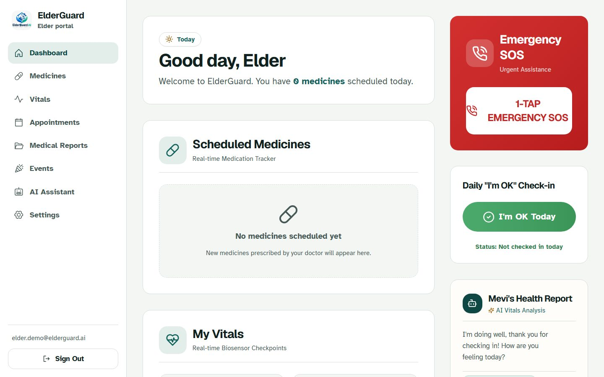
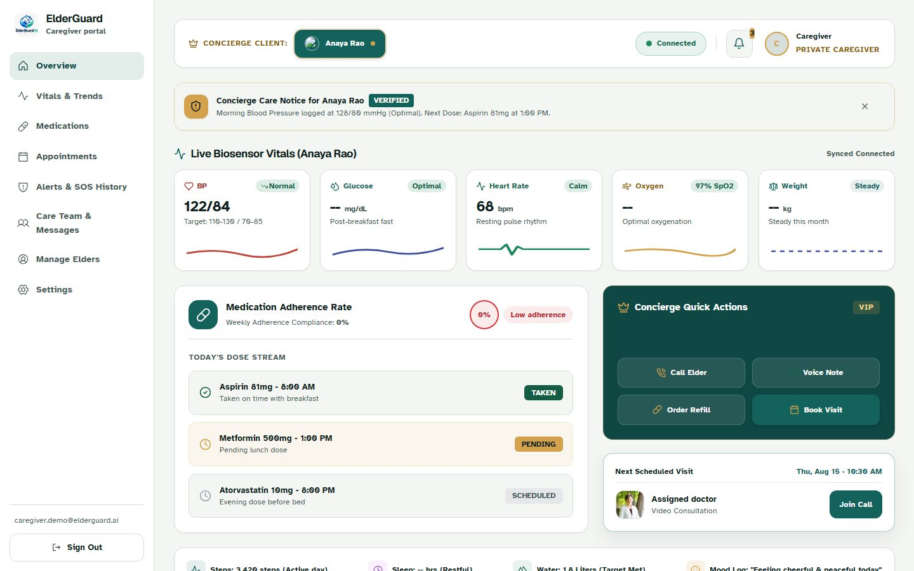
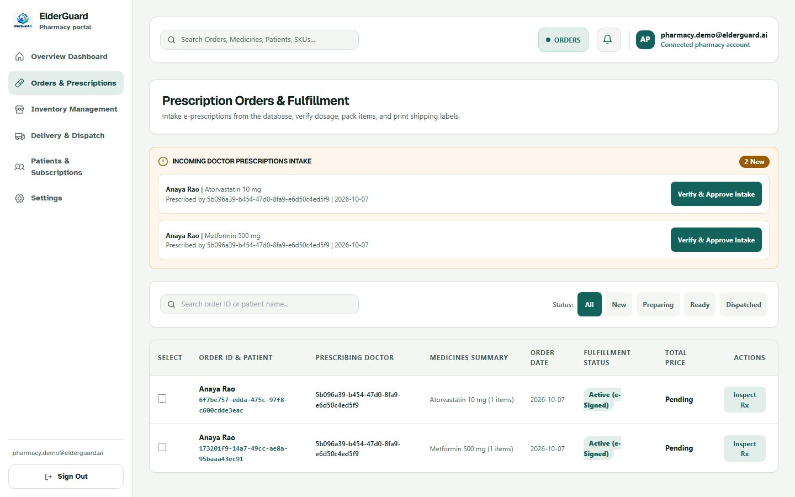
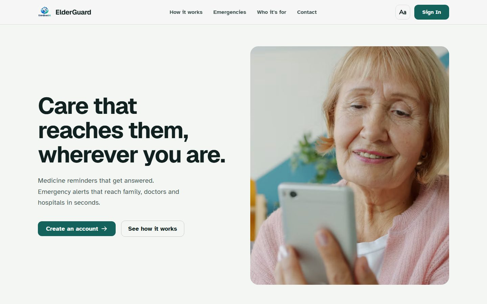

Problem Statement: Elder Safety, Health Monitoring and Connected Care
Presented By:
713525AD015 - DEEPIKA S 713525AD036 - HANA SHAJIMON 713525AD041 - HARINI M 713525AD052 - JANANI D
Problem Statement · Elder Safety
Keeping Elders Safe: A Connected-Care Approach
Many older adults live apart from their families. Missed medicines, unnoticed changes in health and slow emergency response put them at risk, while family, doctors, pharmacies and hospitals each work from separate information. We built one connected platform where everyone in an elder's care circle sees the same live record and can act in time.
What happens today
The 8:00 AM dose is missed. Blood pressure is not logged for days. A fall at night and no one knows.
{{i:ArrowDown}}
What ElderGuard does
A reminder rings until it is answered, and the caregiver sees the dose logged live. One tap on SOS alerts family first, then a second contact, the hospital desk and emergency services if nobody responds.
Understanding the Empathy Phase: Connecting with Elders and Caregivers
Deep Elder & Caregiver ResearchStart with genuine curiosity about the lives of older adults and the family members who worry about them. Understand daily routines, fears of being alone and how comfortable they are with technology.
Building Emotional ConnectionsGo beyond demographics. What makes an elder hesitate to ask for help? What keeps a caregiver awake at night? What would make both feel in control?
Interview elders and family caregivers
Observe medicine routines at home
Build empathy maps of feelings and needs
Medicine-routine diary studies
Contextual enquiry in homes and care centres
Journey mapping of an emergency
SAYS
"Did she take her tablets? Is she okay?"
THINKS
"What if something happens and I am not there?"
FEELS
Anxious, guilty, always on call
DOES
Calls repeatedly, asks neighbours to check in
Empathy map of a family caregiver. Illustrative persona; interviews with real elders and caregivers are planned.
Define the Problem: Identifying Core Pain Points in Elder Care
{{i:Pill}}
Missed Medicines
Several daily medicines are easy to forget, and the family finds out late, if at all.
{{i:Siren}}
Slow Emergency Response
A fall or sudden illness can go unnoticed. Help depends on someone happening to call.
{{i:Link}}
Disconnected Information
Family, doctor, pharmacy and hospital each hold a piece, so prescriptions, vitals and history are not shared.
{{i:DeviceMobile}}
Hard-to-Use Technology
Small text, crowded screens and complex steps leave out the people who need help most.
The problem statement emerges from synthesis: "Elders and their families need a simple, connected way to take medicines on time, share health information and get help fast, so older adults can live independently with confidence."
Ideate Creative Solutions: Brainstorming Elder Care Features
{{i:Pill}}
Reminders That Get Answered
One gentle alarm per dose time. A tap logs the dose, and repeated misses alert the caregiver.
{{i:Siren}}
One-Tap SOS with Escalation
Family first, then a second contact, the hospital desk and emergency services on a timer.
{{i:Robot}}
Vitals and AI Companion
Track blood pressure, sugar, oxygen and heart rate, and chat with Mevi, a patient AI companion.
More ideas from the brainstorm
Prescription scanner that turns a photo into a medicine schedule
Doctor appointments with queue tokens
Doctor-to-pharmacy e-prescriptions
Five role-based portals with a large-text mode
Innovation thrives when we encourage wild ideas, defer judgement and build on each other's concepts. Generate quantity first, then refine for safety and quality.
Proposed Solution: How ElderGuard Works End to End
{{i:Pill}}
1. Capture
Elders log medicines and vitals; doctors write prescriptions
{{i:CaretRight}}
{{i:Link}}
2. Connect
One shared record links elder, caregiver, doctor, pharmacy and hospital
{{i:CaretRight}}
{{i:Bell}}
3. Alert
Reminders ring, unusual readings are flagged, SOS goes out in one tap
{{i:CaretRight}}
{{i:Siren}}
4. Escalate
Caregiver now, second contact at 2 min, hospital at 5, emergency services at 10
{{i:CaretRight}}
{{i:ArrowsClockwise}}
5. Review
History and records let family and doctors act on what happened
Safety guardrails built in
Role-based access: each user sees only the elders they are linked to
ElderGuard alerts and informs; it does not diagnose or replace a doctor or emergency services
Prototype Development: Building Tangible Solutions for User Testing
ElderGuard AI · working prototype


Caregiver portal

Pharmacy queue

Landing page
{{i:PencilRuler}}
Design System
Warm paper background, one teal accent, large readable type and a text-size control for low vision.
{{i:Cursor}}
Interactive Portals
Five role-based portals (elder, caregiver, doctor, hospital, pharmacy) running on real data.
{{i:Cube}}
Minimum Viable Product
A working React and FastAPI app: reminders, SOS escalation, vitals, and prescriptions that reach the pharmacy.
Prototypes are learning tools. Build fast, fail fast and iterate based on what real users show you.
Testing Phase: Verifying the Prototype and Planning User Trials
Automated Testing
An automated browser opens every portal page, the demo story is checked end to end, and each screen is scanned against WCAG 2.1 accessibility rules.
Key Testing Methods
End-to-end tests (Playwright): 22 tests across all five portals and phone size
Accessibility audit (axe): 0 serious violations against WCAG 2.1 A/AA
SOS escalation drill: all 4 tiers fired in order in a timed run
Planned: teach-back and think-aloud sessions with real elders and caregivers
22/22
Automated tests passing
4/4
SOS tiers fired in the timed drill
Testing is discovery, not validation. Automated checks show that it works; sessions with real elders will show whether it helps.
Use Case: How Connected Care Protects an Elder at Home
Initial Challenge
Mrs. Anaya Rao, 77, lives alone and takes three medicines a day. Her daughter Maya lives in another city and worries about missed doses and emergencies.
1
2
Empathy Insights
Anaya does not want to be a burden and Maya cannot call every hour. They want reassurance that does not feel like surveillance.
Design Response
A reminder rings and Anaya taps Taken; Maya sees it live. Dr. Mehta prescribes in the app and the order reaches the pharmacy. One tap on SOS alerts Maya first, then the hospital.
3
4
Expected Impact
Fewer missed doses, faster response and less worry for the family. To be measured in a pilot.
Illustrative scenario based on this project's demo data; impact is a target to be validated.
Integration Challenges: Balancing Elder Needs with Technical and Clinical Constraints
{{i:Lock}}
Privacy & Compliance
Health data is highly sensitive. It needs consent, encryption and access logs in line with India's DPDP Act. Role-based access is in place; consent and audit features come next.
{{i:Siren}}
Emergency Reliability
SOS must never stall. Alerts are in-app and push today; SMS and voice-call providers and a durable job queue are needed for production.
{{i:Database}}
Data & Integration
Records come from elders, doctors, pharmacies and hospitals. One shared data model and clean APIs keep them consistent.
{{i:WifiHigh}}
Access & Performance
Older users often have older phones and slow networks. Large text and simple screens are prioritised; an installable app is next.
{{i:ShieldCheck}}
Safety first
ElderGuard alerts and informs; it does not diagnose or replace a doctor or emergency services.
Successful integration needs continuous dialogue between clinicians, designers and engineers. Constraints often spark creative solutions when teams collaborate early.
Success Metrics: Measuring the Impact of ElderGuard
22/22
Tests Passing
Automated end-to-end checks across all five portals
0
Accessibility Issues
Serious issues found by an axe audit (WCAG 2.1 A/AA) on every page
4
Escalation Tiers
Caregiver, second contact, hospital, emergency services, verified in a timed drill
90%+
Doses On Time
Pilot target for doses logged when due, to be validated
The first three are measured on the prototype; the last is a target for the pilot, to be validated with real users
Qualitative Indicators of Success
Caregivers report less worry and fewer check-in calls
Elders use the SOS button and large-text mode without help
Doctors and pharmacies adopt the shared prescription flow
Shorter time from SOS to first response
Future Enhancements: Expanding ElderGuard's Reach and Reliability
{{i:Phone}}
Phase 1
SMS & Voice-Call Alerts
Reach caregivers and hospitals even without the app, with delivery receipts and retries.
{{i:SealCheck}}
Phase 1
Verified Doctors & Hospitals
Licence checks before a clinical account can issue prescriptions.
{{i:Microphone}}
Phase 2
Multilingual Voice Assistant
Speak and listen in Tamil, Hindi and other regional languages.
{{i:DeviceMobile}}
Phase 2
Installable Mobile App
Push notifications, offline mode and an always-ready SOS button.
{{i:Watch}}
Phase 3
Wearable Integration
Read heart rate and blood pressure, and detect falls, from smart watches.
{{i:Link}}
Phase 3
EHR & ABDM Integration
Pull records securely from hospitals and ABHA health IDs, with consent.
Roadmap: Phase 1 reliable alerts and trusted accounts → Phase 2 voice and mobile → Phase 3 wearables and health-record integration.
Next Steps: Taking ElderGuard from Prototype to Pilot
{{i:Users}}
Validate with Elders and Families
Run usability sessions with older adults and caregivers, and refine the screens from what they struggle with.
{{i:ShieldCheck}}
Harden for Real Use
Add SMS and call alerts, secure secrets and logins, privacy consent and monitoring.
{{i:Rocket}}
Pilot and Scale
Partner with a clinic or care home for a small pilot, measure results, then expand.
In Summary
Connected information → faster response → safer elders → peace of mind
Start small, measure impact, and scale what works.
Elder care is an ongoing commitment to staying close to the people we serve and improving relentlessly.
Thank you!
ElderGuard AI: Care that reaches them, wherever you are